1. Instalando Ryujinx
1.1. Extraia as pastas Ryujinx LDN e ROM para algum lugar
Preferencialmente em um SSD e definitivamente fora de Arquivos de Programas
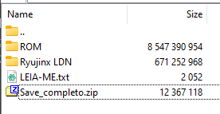
1.2. Abra o Ryujinx em Ryujinx LDN/Ryujinx.exe
Caso apareça um popup perguntando se quer usar Vulkan, clique Yes (Vulkan)
2.1. Com o Ryujinx aberto, vá em Options > Settings > Input
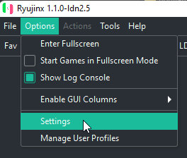
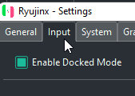
2.2. Clique em Configure no Player 1
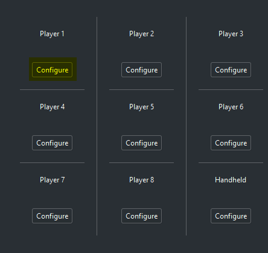
2.3. Em Input Device selecione seu controle e em Controller Type: selecione Pro Controller
O Ryunjinx tem suporte pra DualSense sem precisar do DS4Windows e o Pro Controller sem precisar da Steam
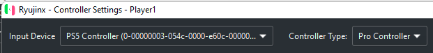
2.4. Configure os inputs do jeito que preferir
Lembre-se de habilitar o Rumble
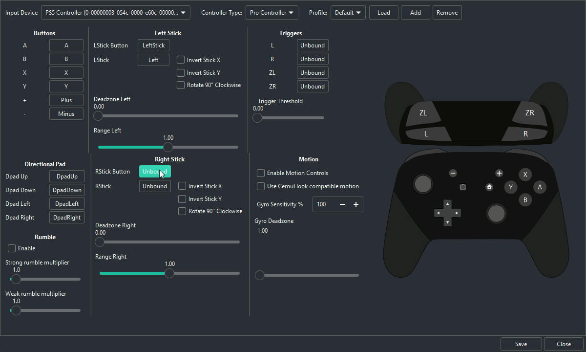
3.1. Vá em Options > Manage User Profiles
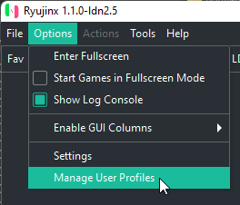
3.2. Clique em Add New Profile
Precisa criar um novo perfil; se só renomear o padrão, vai dar conflito ao jogar online
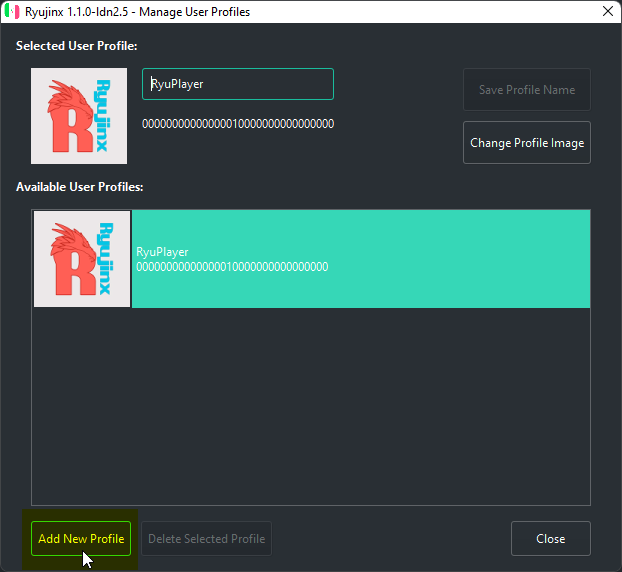
3.3. Coloque seu nome
Definitivamente o verdadeiro Ian Chamon
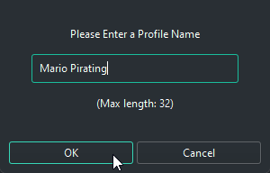
3.4. Escolha uma imagem do seu PC ou uma do Switch
Eu honestamente não faço ideia onde essas imagens aparecem
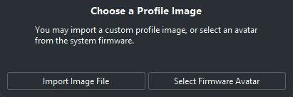
3.5. Clique 2 vezes no seu perfil para ativá-lo
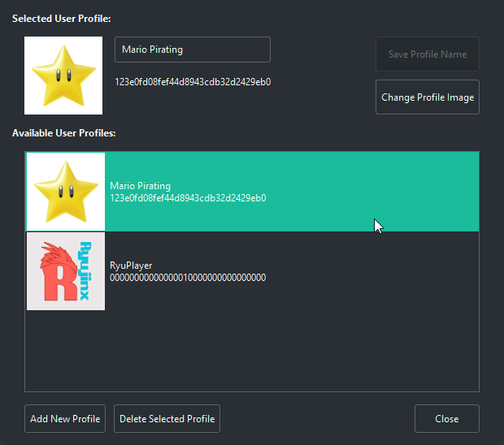